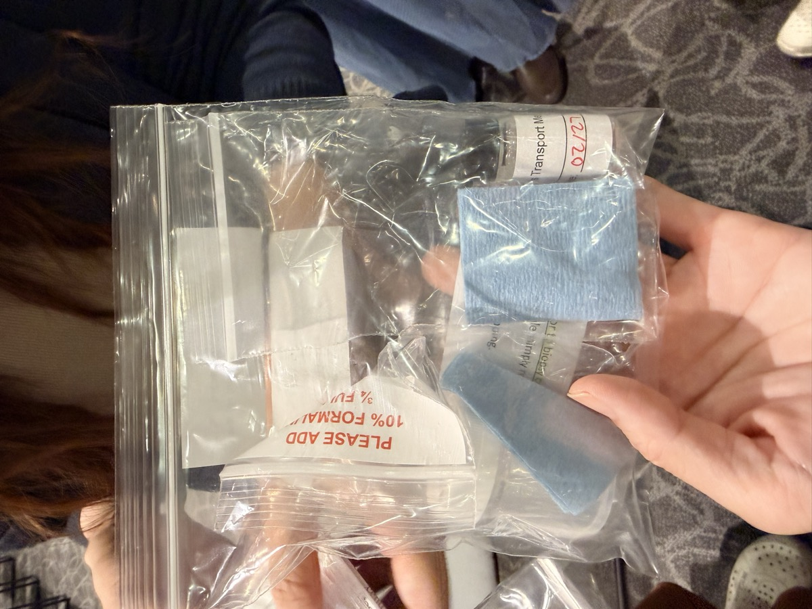
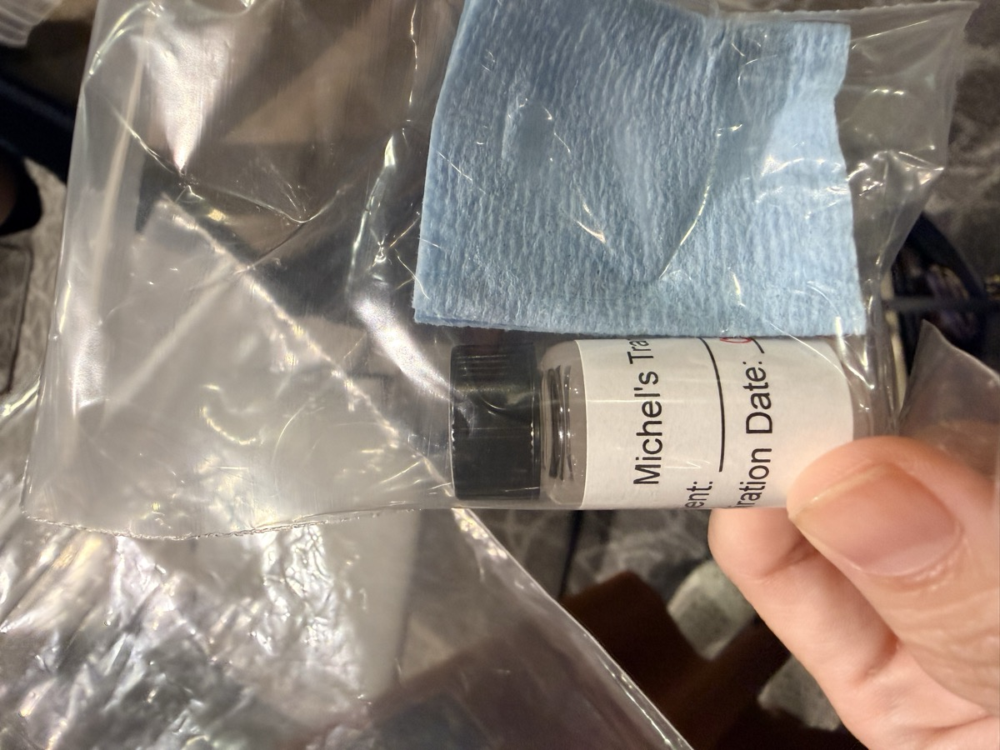
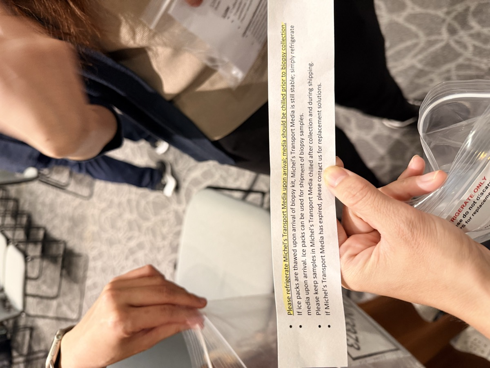
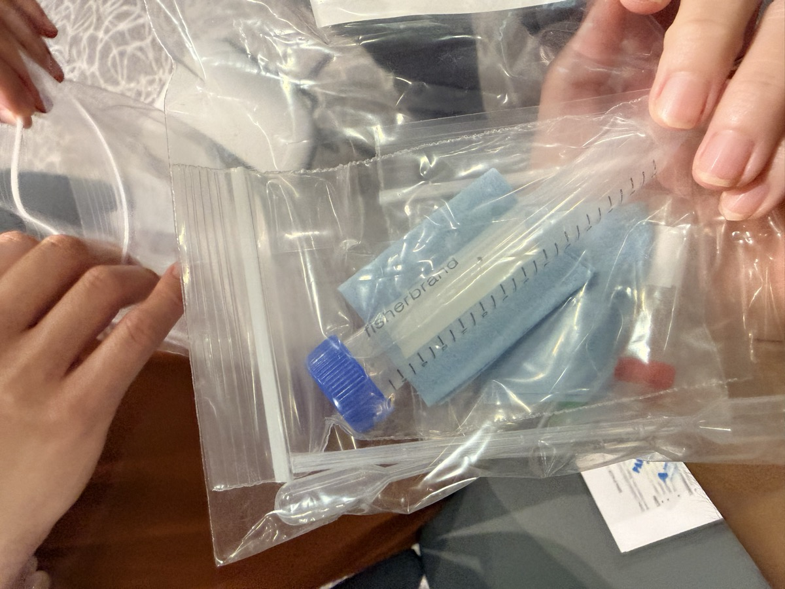
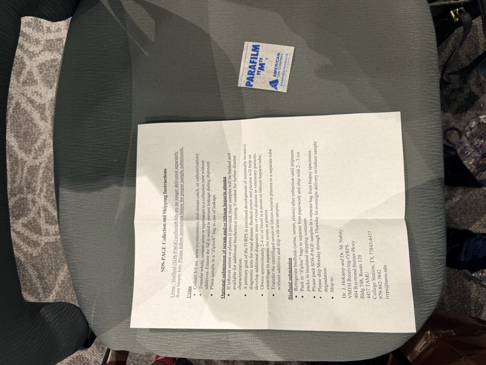

小動物臨床病理學習筆記
講師：Mary B. Nabity, DVM, PhD, DACVP（臨床病理專科）｜德州農工大學獸醫病理生物學系
課程日期：2026 年 6 月 27–28 日
⭐ 必記原則
- 血液抹片無可取代——自動分析儀無法偵測形態異常
- 尿液分析嚴重不足——應積極推廣，尤其 7 歲以上
- 蛋白尿先確認來源——腎前→腎性→腎後，再做 UPC
- 小型犬肌酐基準值低——需與自身歷史值比較
- SDMA 非萬能——分析變異大；SDMA 需上升 ≥40% 才具意義
- FGF-23 是貓早期 CKD 的磷監測工具——Stage 1-2 最有用
- CKD 應盡早診斷治療——Stage 1 即開始保護腎元
- AKI 初始肌酐不預測預後——峰值肌酐才重要
一、細胞學概論
▾細胞學流程（美國模式）
- 採樣：細針抽吸（FNA）、壓印抹片（Impression smear）
- 由一般開業或專科醫師採樣 → 臨床病理醫師解讀
- 樣本需有足夠細胞數；肉眼初評（細胞豐富 vs. 血樣）後仍需顯微鏡確認
初步分類
| 類型 | 說明 |
|---|---|
| 發炎 | 中性球性、組織球性、淋巴球性、嗜酸球性 |
| 腫瘤 | 上皮性、間質性、圓形細胞性 |
| 其他 | 正常結構、囊腫、壞死 |
發炎類型鑑別
中性球性
- 細菌感染
- 急性/持續性損傷
組織球性（巨噬細胞性）
- 慢性發炎成分
- 真菌感染
淋巴球性
- 過敏、慢性刺激、淋巴液
- 某些真菌/寄生蟲
嗜酸球性
- 過敏、寄生蟲、真菌
- 副腫瘤症
腫瘤分類
- 良性：細胞形態均一，外觀接近正常
- 惡性：多項惡性標準（核仁明顯、核質比異常、多核等）
圓形細胞腫瘤（最常見）
| 腫瘤 | 特徵 |
|---|---|
| 淋巴瘤 | 大型淋巴球 > 嗜中性球、染色質不成熟、核仁可見 |
| 反應性淋巴結 | 多數為小淋巴球 ± 漿細胞、Mott 細胞 |
| 肥大細胞瘤（MCT）分化好 | 顆粒明顯（Wright's stain > Diff-Quik） |
| 肥大細胞瘤（MCT）分化差 | 顆粒少 → 用 Wright's stain 確認 |
| 組織球瘤 | 良性，年輕犬常見 |
| TVT（傳染性性病腫瘤） | 細胞質有空泡 |
| 漿細胞瘤 | — |
皮膚腫瘤重點
| 腫瘤 | 特徵 |
|---|---|
| 毛母細胞瘤（Trichoblastoma） | 含基底細胞、皮脂腺細胞等 |
| 黑色素瘤 | 皮膚/黏膜/趾，色素量不等 |
| 脂肪瘤 | 油性抹片、成熟脂肪細胞聚集 |
| 肛門周圍腺瘤 | 含肝樣細胞（hepatoid）+ 儲備細胞（reserve cells） |
| 肛囊腺癌 | 神經內分泌外觀、常見高血鈣 |
| 軟組織肉瘤 | 含冠狀細胞（crown cells） |
二、血液抹片判讀
▾抹片製作要點
- 推片角度約 30°、速度適中
- 推太快 → 白血球集中在邊緣；推太慢 → 細胞扁平
評估區域
| 區域 | 倍率 | 評估內容 |
|---|---|---|
| 羽毛緣（feathered edge） | 10x、20x | 血小板凝集、非典型細胞、寄生蟲 |
| 單層區（monolayer） | 40x、100x oil | WBC 分類計數、血小板估計、WBC 形態 |
血小板評估
- 自動計數低 → 先看抹片是否有凝集
- 少量小凝集 → 可能未影響計數；多量大凝集 → 確實影響（需重新採血）
- 估計方式：每 100x 視野平均血小板數 × 15,000–20,000
- 正常：每 100x 視野 ≥ 13 顆（> 200,000/μL）
ProCyte Dx 散點圖：大血小板凝集會出現在 WBC 雲端旁（橘色細胞延伸弧線）
白血球正常形態
| 細胞 | 特徵 |
|---|---|
| 中性球（N） | 紫色分葉核、淡粉色胞質 |
| 淋巴球（L） | 略大於 RBC、圓核、少量藍色胞質 |
| 單核球（M） | 大於中性球、分葉核、灰藍色胞質 ± 空泡 |
| 嗜酸球（E） | 大顆粒：犬圓形、貓梭形 |
| 嗜鹼球（B） | 串珠狀核；犬少量紫色顆粒；貓多量薰衣草色桿狀顆粒 |
中性球異常形態
毒性變化（Toxic Change）
骨髓→血液，胞質受影響
- Döhle 小體（淡藍灰色胞質包涵體）
- 嗜鹼性胞質
- 泡沫狀空泡
- 毒性顆粒
左移（Left Shift）
未成熟中性球增加
- 帶狀細胞（Band cells）
- 後中性球（Metamyelocyte）
- 中性球前（Myelocyte）
退化性變化（Degenerative Change）：組織內，細胞核受影響 → 核腫脹、核色淡
nRBC vs. 淋巴球鑑別
| nRBC | 淋巴球 | |
|---|---|---|
| 胞質量 | 較多 | 較少 |
| 胞質色 | 紫灰色 | 藍色 |
| 染色質 | 緻密 | 細緻 |
RBC 形態異常
| 異常 | 臨床意義 |
|---|---|
| 球形紅血球（Spherocytes） | IMHA |
| 多染紅血球（Polychromatophils） | 再生性反應 |
| 鬼魂細胞（Ghost cells） | 血管內溶血 |
| 低色素（Hypochromasia） | 缺鐵性貧血（細胞完整但血紅素少） |
| Heinz bodies + Eccentrocytes | 氧化性損傷（如洋蔥中毒） |
| 棘細胞（Acanthocytes）、裂片（Schistocytes） | 微血管病變（心絲蟲、血管肉瘤、血管炎） |
RBC 寄生蟲
- Babesia canis（大型）vs. Babesia gibsoni（小型）
- Mycoplasma haemofelis / haemocanis：需與染色沉澱物鑑別（沉澱物不在細胞上）
散點圖（Dot Plot）判讀重點
- 嗜酸球/嗜鹼球增多：特定顏色雲端密度增加
- 白血球/中性球減少：中性球雲端消失
- 淋巴性白血病：各細胞群邊界模糊、連續性分布
三、尿液分析概論
▾
尿液分析嚴重不足：7 歲以下做血液學 50–60%，但尿液分析僅 8%；7 歲以上做血液學 85–90%，尿液分析約 45–50%。應積極推廣！
樣本處理原則
- 立即處理（ASAP）
- 儲存後人工假象：pH 升高、細菌增殖、葡萄糖/酮體/膽紅素/細胞/管型下降
物理性狀
| 顏色 | 可能原因 |
|---|---|
| 深黃至棕色 | 膽紅素 |
| 紅色 | 血尿（離心後上清液清澈） |
| 紅棕色 | 血紅素或肌紅素（離心後仍混濁） |
| 綠色 | 膽綠素 |
尿比重（USG）— 使用折射計（非試紙）
| 物種 | 正常水合 | 脫水時 |
|---|---|---|
| 犬 | > 1.030 | > 1.035 |
| 貓 | > 1.035–1.040 | > 1.040–1.045 |
脫水 + 腎功能標記升高 + USG 低於上表 → 懷疑腎臟疾病
化學特性（試紙）
蛋白質
- 正常：陰性；中等至高濃縮尿可有 Trace 至 1+（可為正常）
- 後續步驟：確認來源（腎前性 / 腎性 / 腎後性）
葡萄糖
| 物種 | 腎閾值 |
|---|---|
| 牛 | 100 mg/dL |
| 馬 | 150 mg/dL |
| 犬 | 180 mg/dL |
| 貓 | 280 mg/dL |
| 鳥 | 600 mg/dL |
- 高血糖 + 葡萄糖尿 → 糖尿病、短暫壓力
- 血糖正常 + 葡萄糖尿（Normoglycemic glucosuria）→ 近端腎小管功能異常
- 遺傳：Basenji 犬類 Fanconi 症候群；獲得性：鉤端螺旋體、毒物（Gentamycin、肉乾零食）
酮體
- 最常見：糖尿病、飢餓（過度脂肪分解）
- 亦可見於腎小管損傷
- ⚠ 亞硝基普魯士酸（Nitroprusside）反應 — 不偵測 β-羥基丁酸酯
膽紅素
- 只有結合型膽紅素可濾入尿液
- 腎前性：溶血性貧血 → ↑ALT、AST
- 肝臟性：肝細胞疾病；腎後性：→ ↑ALP、GGT
- 犬：輕度膽紅素尿可為正常（尤其高濃縮尿）；其他物種：不應出現膽紅素尿
血液（試紙）
- 偵測血紅素的類過氧化酶活性，無法區分：完整 RBC / 游離血紅素 / 肌紅素
- 假陽性：漂白劑汙染、某些細菌；假陰性：高濃縮尿、RBC 沉澱
尿液 pH
- 正常（犬貓）：6.0–7.5
- 腎小管酸中毒（RTA）：代謝性酸中毒 + 鹼性尿 → 懷疑
- pH 影響結晶形成：鳥糞石（Struvite）傾向鹼性尿
尿沉渣檢查
標準流程：離心同等量尿液（低速）→ 留 0.5 mL → 30 分鐘內分析；低倍 10x，高倍 40x；降低聚光鏡增加對比度
細胞正常值
| 項目 | 正常值 | 異常意義 |
|---|---|---|
| RBC | 0–5/hpf | ↑ → 出血、外傷、發炎、腫瘤 |
| WBC | 0–5/hpf | ↑ → 感染或非感染性發炎 |
| 上皮細胞 | 少量 | 大量或非典型 → 腫瘤？ |
| 細菌 | 膀胱穿刺應為陰性 | 任何細菌 → 一定異常；桿菌比球菌更容易看到 |
管型（Casts）
| 管型類型 | 意義 |
|---|---|
| 透明管型 | 0–1/lpf 正常 |
| 顆粒管型 | 腎小管損傷 |
| 蠟狀管型 | 慢性/嚴重損傷 |
| 細胞管型 | 急性損傷 |
重要結晶
| 結晶 | 形態 | 臨床意義 |
|---|---|---|
| 鳥糞石（Struvite） | 「棺蓋」形 | 常見；鹼性尿；UTI（產尿素酶細菌） |
| 草酸鈣二水合物 | 信封形 | 常見，儲存尿液中多 |
| 草酸鈣一水合物 | 圍欄/啞鈴形 | 常病理性；乙二醇中毒 |
| 尿酸銨 | 「茄果」形 | 達爾馬提亞犬、英國鬥牛犬；門靜脈分流 |
| 胱胺酸（Cystine） | 六邊形 | 永遠不正常；遺傳性腎小管缺陷 |
| 膽紅素 | 金色小麥穗 | 少量在犬（雄）可正常；膽汁淤積 |
尿液腫瘤篩查
- 尿道上皮癌（Urothelial Carcinoma）：非典型上皮細胞
- CADET® BRAF 檢測：偵測 BRAF 基因突變
- 適應症：尿液沉渣見非典型細胞、高風險品種（Scottish Terrier 等）篩查
四、血清腎臟生物標記
▾傳統腎功能評估架構
| 類別 | 指標 |
|---|---|
| GFR 標記 | 肌酐（Creatinine）、SDMA |
| 尿素氮 | BUN（僅參考，不用於 IRIS 分期） |
| 磷代謝 | 磷、FGF-23 |
| 尿液 | USG、UPC、管型、葡萄糖尿/酮體 |
| 蛋白尿類型 | SDS-PAGE、Cystatin B |
肌酐（Creatinine）
受肌肉量影響：年齡、體型/品種、肌肉萎縮。小型犬正常值偏低 → 同一隻犬前後對比比絕對值更重要！
- 空腹建議 8 小時（依檢測方式不同有所差異）
- Jaffe 法干擾：葡萄糖、蛋白質（假高）；膽紅素（假低）
- 分析變異大：同一實驗室不同時間點可差 44%；不同實驗室更大（同樣品可測 1.7 vs. 2.9 mg/dL）
- 允許誤差標準：< 20%（但許多實驗室達不到）
SDMA 補充：講座逐字記錄
- 甲基化胺基酸，來自核蛋白水解 → 所有有核細胞產生
- 約 90% 腎臟排泄；優點：不受肌肉量影響
SDMA 參考值（IDEXX）
| 等級 | µg/dL |
|---|---|
| 正常 | 0–14 |
| 輕度升高 | 15–19 |
| 中度升高 | 20–30 |
| 中重度 | 30–50 |
| 重度 | > 50 |
SDMA 臨床應用
- 可疑腎病 / 肌酐漸升但仍在正常值內
- 持續低濃尿 / 多尿多渴
- 肌肉量差的患者
- ⚠ 已有明確氮血症時 → 不需要再驗 SDMA
SDMA 使用注意事項
- 分析變異性（CV ≈ 13.5%）> 目標（< 10%）；SDMA 需上升 ≥40% 才具臨床意義（例如：基準 14 → 需升至 ≥ 20 才有意義）
- 院內機器（Catalyst）貓的 SDMA 與參考實驗室差異可達 20–50%
- 院內機器不建議冷凍樣本；需在 24 小時內檢驗
- 健康動物 SDMA 升高可能為偽陽性，勿單獨作為診斷依據
- SDMA 升高亦可見於：幼犬、灰狗/緬甸貓（基因差異）、淋巴瘤（治療後可恢復正常）
- 老齡犬 SDMA 參考值應略高（老齡犬研究建議上限 15-17 µg/dL）
目前若有持續性的 SDMA 輕微上升，亦算是慢性腎病的診斷條件之一（IRIS 最新更新）
FGF-23（成纖維細胞生長因子-23）補充：講座逐字記錄
- 骨骼分泌的荷爾蒙（「排磷素」）→ 抑制磷的再吸收
- 在 CKD 早期即升高（磷代謝失調指標）
- Ca × P > 70 → 死亡率提高（軟組織礦化）
FGF-23 在 CKD 的作用機轉
腎元減少
GFR ↓
GFR ↓
→
血磷 ↑
→
FGF-23 ↑
PTH ↑
PTH ↑
→
磷排泄 ↑
Vit D 活化 ↓
Vit D 活化 ↓
- 早期：Ca / P / VitD 仍正常，但 FGF-23 和 PTH 已上升
- 晚期：磷急遽升高、FGF-23 和 PTH 極高
FGF-23 參考值與建議（貓）
| 值 | 意義 | 建議 |
|---|---|---|
| < 299 pg/mL | 正常 | — |
| 300–399 pg/mL | 邊界 | 密切監測 |
| > 400 pg/mL | 升高 | 建議減少磷負荷 |
臨床適應症（貓）
- 早期 CKD（Stage 1–2）且血磷 < 4.6 mg/dL（在正常範圍下半段）
- 若 FGF-23 升高且 Stage 1 → 腎臟處方飼料
- 若 FGF-23 升高且 Stage 2 → 腎臟飼料 + 額外磷結合劑
- 若血磷已超出正常範圍 → 不需驗 FGF-23，直接處理高磷
檢體處理
- 血清（1 小時內離心）；最少 1 mL
- 冷藏最多 14 天；可長期冷凍；隔夜冰袋運送
- 目前台灣尚無，韓國有提供
- 干擾：未控制甲亢、心臟病、全身性發炎、腫瘤、溶骨性骨病變、顯著貧血
五、蛋白尿患者評估
▾蛋白尿來源定位
腎前性
血紅素/肌紅素/
免疫球蛋白輕鏈
血紅素/肌紅素/
免疫球蛋白輕鏈
→
腎性
腎小球性 / 腎小管性
/ 功能性
腎小球性 / 腎小管性
/ 功能性
→
腎後性
出血性 / 發炎性
（UTI）
出血性 / 發炎性
（UTI）
無氮血症 ≠ 排除腎臟疾病！犬腎小球疾病常先出現蛋白尿。
有活動性尿沉渣（↑WBC、RBC、細菌）→ 先治療發炎/感染，再評估 UPC（感染性蛋白尿不反映腎小球狀況）
UPC（尿蛋白：肌酐比）
| UPC | 犬 | 貓 | 分類 |
|---|---|---|---|
| 非蛋白尿 | < 0.2 | < 0.2 | 正常 |
| 邊界蛋白尿 | 0.2–0.5 | 0.2–0.4 | 邊界 |
| 蛋白尿 | > 0.5 | > 0.4 | 異常 |
UPC 判讀
- UPC > 2 → 多為腎小球損傷（值越高越可能）
- UPC < 2 → 可能腎小球或腎小管損傷
- 治療目標：UPC < 0.5 或降低 > 50%
試紙蛋白與 UPC 的關係（犬）
- USG ≥ 1.030 + Trace 或 1+ → UPC 不太會異常
- USG ≤ 1.012 → UPC 很可能異常
- 2+ 以上 → UPC 多為異常
AKI 急性期不建議做 UPC（肌酐排泄減少 → 假性偏高）。接近閾值時建議 3 天平均值。應使用同一實驗室監測。
微量白蛋白尿（Microalbuminuria）
- 定義：1–30 mg/dL 白蛋白，低於試紙可偵測範圍
- 意義：早期腎臟疾病（特別是腎小球）、全身性疾病（內分泌/腫瘤/心血管）
- 老師認為：若 UPC 也驗了，微量白蛋白尿的附加意義不大（大多漏出來都是白蛋白）
SDS-PAGE（尿蛋白電泳）補充
原理
分離不同分子量蛋白質：高 MW（腎小球漏出）vs. 低 MW（腎小管未再吸收）
| 類型 | 特徵 | 典型 UPC |
|---|---|---|
| 腎小球性 | 中大分子量蛋白帶（含白蛋白以上） | 通常 1–30 |
| 腎小管性 | 低分子量蛋白帶 | 通常 < 2 |
| 混合性 | 兩者均有 | 不定 |
臨床適應症
- 持續性、輕度蛋白尿（UPC < 3）：區分腎小球 vs. 腎小管來源
- 懷疑免疫複合物腎小球腎炎（ICGN）：多條 > 200 kDa 帶 → 特異性高（敏感性低）
- 監測治療反應：ICGN → 大分子帶消失
- ICGN 判讀準確約 95%
SDS-PAGE 干擾因素
- 活動性發炎（UTI）、大量/明顯血尿（> 30/hpf）→ 不宜送檢
- 未結紮公犬：前列腺蛋白條帶位置固定，通常不致重大干擾
- 輕微血尿（20-30/hpf）仍可送，需備注說明
尿液 Cystatin B（uCysB）補充
- 腎小管細胞死亡時釋放入尿液
- IDEXX 自 2023 年提供（免疫凝集法）
- ≥ 100 ng/mL → 支持活動性腎小管損傷（ELISA 法：≥ 50 ng/mL）
- ⚠ 不可冷凍樣本；需盡快檢驗
應用
- 腎毒性暴露監測（氨基糖苷類、百合花中毒等）
- AKI 事件後監測（麻醉手術後）
- 穩定 vs. 進展型 CKD 的輔助鑑別；預後輔助
全身性發炎、腫瘤、麻醉/手術也可能升高（非腎損傷性）
六、CKD、AKI 與腎小管病變
▾慢性腎病（CKD）
- 定義：慢性（> 3 個月）、不可逆、進行性腎功能喪失
- 症狀進展：無症狀 → 多尿/多渴/體重減輕 → 尿毒症候群 ± 貧血
IRIS CKD 分期系統
| Stage | 犬 Cr (mg/dL) | 貓 Cr (mg/dL) | 臨床 |
|---|---|---|---|
| 1 | < 1.4 | < 1.6 | 無氮血症（但可有早期症狀） |
| 2 | 1.4–2.8 | 1.6–2.8 | 輕度氮血症 |
| 3 | 2.9–5.0 | 2.9–5.0 | 中度氮血症 |
| 4 | > 5.0 | > 5.0 | 重度氮血症 |
分期原則：① 先確認 CKD；② 病患穩定且水合良好時分期；③ 肌酐與 SDMA 不一致 → 取較高分期；④ 理想以 ≥2 次（相隔 ≥2 週）肌酐確認。不使用 BUN 分期。
IRIS 亞分期（Sub-staging）
蛋白尿
- 非蛋白尿：UPC < 0.2
- 邊界：0.2–0.5（犬）/ 0.2–0.4（貓）
- 蛋白尿：> 0.5（犬）/ > 0.4（貓）
血壓（mmHg）
- 正常：< 140
- 前期高血壓：140–159
- 高血壓：160–179
- 重度高血壓：≥ 180
CKD 流行病學 補充：英國大數據
貓
- 患病率約 1–1.2%
- 中位診斷年齡 14.8–15 歲
- 多落於 Stage 2–3
- 中位存活 388 天（88–1042 天）
- 僅約 25% 量測血壓；其中約半數有高血壓
- 改善存活：低磷、磷結合劑、低 UPC、腎臟飼料
犬
- 患病率約 0.37–4%（不同資料來源）
- > 12 歲佔 64%；診斷時多為 Stage 3–4
- 高風險品種：可卡犬（6.39x）、騎士查理王犬（5.57x）
- 共病：高血壓（OR 25.71）、心臟病（OR 3.88）、牙周病（30%）
- 兩年追蹤約 52% 死亡（多為安樂死）
- 有寵物保險的狗檢測率更高
CKD 進展因子與治療策略
| 目標 | 治療 | 備注 |
|---|---|---|
| 磷控制 | 腎臟飼料、磷結合劑 | 限磷可延長存活；腎臟飼料能降低 FGF-23 |
| 蛋白尿 | ACEi（如 Benazepril）或 ARB（如 Telmisartan） | UPC > 0.4 → 死亡風險 4x；重度可加 Clopidogrel |
| 高血壓 | ACEi/ARB ± Amlodipine | 犬：血壓升高與死亡率/尿毒風險相關 |
| 貧血 | Darbepoetin 或 Vadadustat（Varenzin） | HCT < 30% 即開始介入（舊標準 < 20%）；Vadadustat 無抗體風險 |
| 水合 | 皮下輸液（謹慎） | 僅短暫改善數值，過量有害，非主要治療 |
| 飲食 | 限磷、限鈉、限蛋白、優化 PUFA 比例 | 維持水合與食慾，避免肌肉流失 |
急性腎損傷（AKI）補充
CKD 用「Staging（分期）」；AKI 用「Grading（分級）」— 需先確認 AKI 才開始分級；級別可日內變化
住院相關 AKI：48 小時內肌酐上升 ≥ 0.3 mg/dL；AKI 急性期不建議做 UPC
AKI 臨床表現
臨床症狀
- 嗜睡、厭食、嘔吐（多數）
- 腹瀉（約 40%）
- 無尿（約 25%）
- 多尿（約 20%）
- 乙二醇中毒 → 神經學症狀
尿液發現（膀胱穿刺）
- 濃縮能力下降（中位 USG 1.018）
- 蛋白尿（試紙，80%）
- 血尿 / 膿尿（各 50%）
- 細菌尿（30%）
- 血糖正常葡萄糖尿（25%）
- 管型（15%，敏感性不高）
AKI 常見病因
| 類別 | 比例 | 常見原因 |
|---|---|---|
| 缺血性/發炎性 | ~60% | 胰臟炎、腹膜炎、子宮蓄膿、嚴重腸胃炎 |
| 感染性 | ~10% | 鉤端螺旋體（預後最佳） |
| 毒物 | 6% | 葡萄/葡萄乾、NSAID 過量；貓：百合花、NSAIDs |
| 其他 | 5% | 高血鈣、腎小球病 |
| 不明原因 | ~25% | — |
AKI 預後
| 指標 | 說明 |
|---|---|
| 短期存活率 | 40–60%（平均 50%） |
| 初始肌酐 | 不預測死亡；給予 1–2 天治療觀察反應，避免過早安樂死 |
| 峰值肌酐 + IRIS AKI 等級 | 與死亡率相關 |
| 長期（存活犬） | 中位存活 3.6 年；約 75% 最終肌酐恢復正常 |
| 最佳長期預後 | 感染性病因（如鉤端螺旋體） |
腎小管病變（Tubulopathies）
遺傳性
- Fanconi 症候群（Basenji）
- 胱胺酸尿（Cystinuria）
- 腎小管酸中毒（RTA）
獲得性
- 毒物：NSAID、肉乾零食毒性
- 感染：鉤端螺旋體
- 小型犬：肉乾攝取過量
- 拉布拉多：肝銅儲積
臨床表現
- 血糖正常葡萄糖尿、酮體尿、蛋白尿/胺基酸尿
- 電解質異常：低鉀血症、低磷血症（需測 FE 確認腎性流失）
Fanconi 測試（尿液）
- 檢測：胺基酸、葡萄糖、乳酸、胱胺酸（PENGEN 套組）
- ⚠ 不穩定，室溫下快速降解；細菌感染 → 假陰性；磺胺類藥物 → 胱胺酸假陽性
七、腎臟切片與 IVRPS
▾腎切片適應症
✅ 適合
- 懷疑腎小球疾病（ICGN vs. 非 ICGN）
- 考慮使用免疫抑制療法前
- 非典型或無反應的 AKI（透析決策）
- 重大蛋白尿（早期 vs. 試驗療法後）
- 特定育種計畫考量
❌ 不適合
- 末期腎病（治療無效）
- 慢性腎小管間質疾病（難以找到原因）
- 出血風險高、單腎患者須特別謹慎
任何不做切片的患者，約有 50% 機率用錯治療（使用或不使用免疫抑制劑）！ICGN vs. 非 ICGN 約各佔 50%，相當於拋硬幣。
為何需要 IVRPS 完整評估？
- 僅做光學顯微鏡（HE 染色）→ 約 25% 誤分類率
- 需要：光顯 + 免疫螢光（IF）+ 穿透電子顯微鏡（TEM）三管齊下
犬腎小球疾病分布（n=501）
| 類型 | 比例 | 存活（中位） |
|---|---|---|
| 免疫複合物腎小球腎炎（ICGN） | 48% | 依 ICGN 亞型而異 |
| 腎小球硬化症 | 21% | — |
| 澱粉樣變 | 15% | 76 天（最短） |
| Podocytopathy | — | 1709 天（最長） |
| 幼年性腎病 | — | 1285 天 |
| 腎小管壞死 | — | 237 天 |
| MPGN（膜增生性） | — | ICGN 中最短 |
| 膜性腎小球腎炎 | — | ICGN 中最長 |
切片操作要點
- 超音波導引；目標：皮質中段（所有腎小球在皮質，避免髓質）
- 針號：通常 16G（或 20G）；採集 ≥ 2 條皮質核心（最好 3 條）
- 用無菌生理食鹽水沖洗，保持濕潤
- 立即低倍顯微鏡確認皮質組織：看到「球狀點」= 皮質；直條狀 = 髓質
核心分配原則
| 用途 | 保存液 | 選擇 |
|---|---|---|
| 光學顯微鏡（HE/PAS/Masson） | 福馬林（甲醛） | 最長、品質最好的那條 |
| 免疫螢光（IF） | Michel's buffer | 中間條或 ½ 條 |
| 穿透電子顯微鏡（TEM） | 福馬林（後處理） | 最短條或 ½ 條 |
Michel's buffer 不是固定液！需冰在冰箱（4°C），絕對不可接觸福馬林。冰箱最多保存約一週，Michel's buffer 本身半年過期。
IVRPS 運送注意事項
- 強烈建議使用 FedEx 隔夜快遞（確認美國非假日；建議週間寄達）
- 保麗龍保冰盒 + 足夠冰袋；切片（Michel's）→ 冷藏；尿液上清液 → 冷凍
- 切片各部位分開裝袋，並加吸水材料
- 第一步：先聯絡 IVRPS 取得 kit，他們會寄給你
- 若無 Michel's buffer → 只能福馬林，但將失去免疫螢光染色的能力
聯絡：Dr. J. Hakamp & Dr. M. Nabity｜VMTH Room 120, 4457 TAMU, College Station TX 77843｜979-862-3842｜ivrps@tamu.edu
📸 實體 IVRPS Kit 照片
以下為講座現場示範的腎臟切片送檢 kit 實物。點擊照片可放大檢視。

IVRPS Kit 全貌福馬林容器 + Michel's 管 + 吸水墊

Michel's Transport Media 管注意過期日；需冷藏，不可接觸福馬林

Michel's 使用說明卡收到即冷藏；冰袋可用於運送

Kit 試管（Fisherbrand）藍色蓋試管用於盛裝 Michel's 切片

SDS-PAGE 送檢說明表含採樣、運送與 IVRPS 聯絡資訊
重點複習彙整
▾臨床行動清單
常規篩查（高齡犬貓）
- 完整尿液分析（USG、沉渣、蛋白）
- UPC 測定（穩定且非活動性發炎時）
- 生化（肌酐、BUN、磷）
- 血壓量測
- IRIS 分期（病患穩定、水合良好）
CKD 確診後
- 降磷策略（腎臟飼料 ± 磷結合劑）
- 監測血磷，Stage 1-2 低磷時考慮 FGF-23
- 制定降 UPC 計畫（ACEi/ARB）
- 增加血壓監測頻率
- HCT < 30% 考慮貧血介入
AKI 流程
- 詳載飲食/用藥史
- 腹部超音波
- 鉤端螺旋體 MAT 或 PCR
- 急性期避免 UPC
- 動態每日重評 IRIS AKI 分級
- 嚴密靜脈輸液監控（輸入 vs. 尿量）
院內檢測品管
- 向廠商確認 UPC 稀釋 SOP 與線性範圍
- SDS-PAGE 送檢前排除活躍感染與嚴重血尿
- SDMA：院內機器定期維護/品管
- 同一隻動物使用同一實驗室追蹤
快速查閱：8 大必記原則
| # | 原則 | 重要細節 |
|---|---|---|
| 1 | 血液抹片無可取代 | 自動分析儀無法偵測：球形紅血球、Heinz body、寄生蟲 |
| 2 | 尿液分析嚴重不足 | 應積極推廣，特別是 7 歲以上患者 |
| 3 | 蛋白尿先確定來源 | 腎前 → 腎性 → 腎後；確認腎性後才做 UPC |
| 4 | 小型犬肌酐基準值低 | 需與自身歷史值比較，而非僅看參考範圍 |
| 5 | SDMA 需上升 ≥40% 才具意義 | 分析變異大；貓院內機器差異達 20–50%；淋巴瘤可假性升高 |
| 6 | FGF-23 是貓早期 CKD 的磷監測工具 | Stage 1–2 且血磷正常時最有用；> 400 pg/mL → 降磷治療 |
| 7 | CKD 應盡早診斷治療 | Stage 1 就要開始治療以保護剩餘腎元 |
| 8 | AKI 初始肌酐不能預測預後 | 峰值肌酐和 AKI 等級才重要；給予 1–2 天觀察反應 |
本筆記整合自 2026 年 6 月 27–28 日小動物臨床病理研討會，講師 Dr. Mary B. Nabity (Texas A&M University)。更多資訊請參閱 IRIS 官方網站 (iris-kidney.com)。
參考文獻
▾
以下文獻為本次課程講師所引用或提及之主要參考資料。
Nabity MB. Small Animal Clinical Pathology Workshop. Texas A&M University, College of Veterinary Medicine & Biomedical Sciences; June 27–28, 2026. [Course lecture notes]
IRIS (International Renal Interest Society). IRIS CKD Staging and Sub-staging Guidelines. Available at: www.iris-kidney.com. Accessed June 2026.
IRIS (International Renal Interest Society). IRIS AKI Grading System. Available at: www.iris-kidney.com. Accessed June 2026.
Nabity MB, Lees GE, Boggess MM, et al. Symmetric dimethylarginine assay validation, stability, and evaluation as a marker for the early detection of chronic kidney disease in dogs. J Vet Intern Med. 2015;29(4):1036–1044.
Hall JA, Yerramilli M, Obare E, et al. Comparison of serum concentrations of symmetric dimethylarginine and creatinine as kidney function biomarkers in cats with chronic kidney disease. J Vet Intern Med. 2014;28(6):1676–1683.
Relford R, Robertson J, Clements C. Symmetric dimethylarginine: improving the diagnosis and staging of chronic kidney disease in small animals. Vet Clin North Am Small Anim Pract. 2016;46(6):941–960.
Prieto JM, Carney PC, Miller ML, et al. SDMA meta-analysis: variability in sensitivity and specificity for detecting renal disease; caution advised for routine monitoring in clinically healthy populations. J Vet Intern Med. [Year of publication as cited in lecture, 2024–2025]
Geddes RF, Biourge V, Chang Y, et al. Serum fibroblast growth factor 23 and symmetric dimethylarginine concentrations in cats with stable, chronic kidney disease. J Vet Intern Med. 2015;29(5):1274–1281.
Finch NC, Syme HM, Elliott J. Risk factors for development of chronic kidney disease in cats. J Vet Intern Med. 2016;30(2):602–610.
O'Neill DG, Elliott J, Church DB, et al. Chronic kidney disease in dogs in UK veterinary practices: prevalence, risk factors, and survival. J Vet Intern Med. 2013;27(4):814–821.
O'Neill DG, Brodbelt DC, Hodge R, et al. Prevalence and disease associations of chronic kidney disease in cats attending primary care veterinary practices in England. Vet Rec. 2022;191(5):e1413.
Segev G, Langston C, Cowgill LD, et al. Criteria for diagnosis of acute kidney injury in dogs: a prospective cohort study. J Vet Intern Med. 2016;30(6):1785–1793. [Israel AKI study, n=249]
Langston C, Cowgill LD, Spano J. Applications and outcome of hemodialysis in cats: a review of 29 cases. J Vet Intern Med. 1997;11(6):348–355.
Lees GE, Brown SA, Elliott J, et al. Assessment and management of proteinuria in dogs and cats: 2004 ACVIM Forum Consensus Statement (small animal). J Vet Intern Med. 2005;19(3):377–385.
Vaden SL, Pressler BM, Lappin MR, Jensen WA. Effects of urinary tract inflammation and sample blood contamination on urine albumin and total protein concentrations in dogs with glomerulonephritis. Vet Clin Pathol. 2004;33(1):14–19.
Lees GE, Cianciolo RE, Clubb FJ Jr. Renal biopsy and pathology. Vet Clin North Am Small Anim Pract. 2011;41(1):29–62.
Cianciolo RE, Mohr FC, Aresu L, et al. World Small Animal Veterinary Association Renal Pathology Initiative: classification of glomerular diseases in dogs. Vet Pathol. 2016;53(1):113–135.
IVRPS (International Veterinary Renal Pathology Service). Biopsy Kit and Submission Guidelines. Texas A&M University, VMTH Room 120, 4457 TAMU, College Station, TX 77843. Email: ivrps@tamu.edu. Tel: 979-862-3842.
Pressler BM. Clinical approach to advanced renal function testing in dogs and cats. Vet Clin North Am Small Anim Pract. 2013;43(6):1193–1210.
Vaden SL. Glomerular diseases. Vet Clin North Am Small Anim Pract. 2011;41(1):123–138.
Bartges JW. Chronic kidney disease in dogs and cats. Vet Clin North Am Small Anim Pract. 2012;42(4):669–692.
Polzin DJ. Chronic kidney disease in small animals. Vet Clin North Am Small Anim Pract. 2011;41(1):15–30.
IDEXX Laboratories. SDMA Reference Ranges and Clinical Interpretation Guidelines. IDEXX Laboratories, Inc.; 2023. Available at: www.idexx.com.
ACVNU (American College of Veterinary Nephrology and Urology). Residency Training Program Overview. Established 2022. Available at: www.acvnu.org.